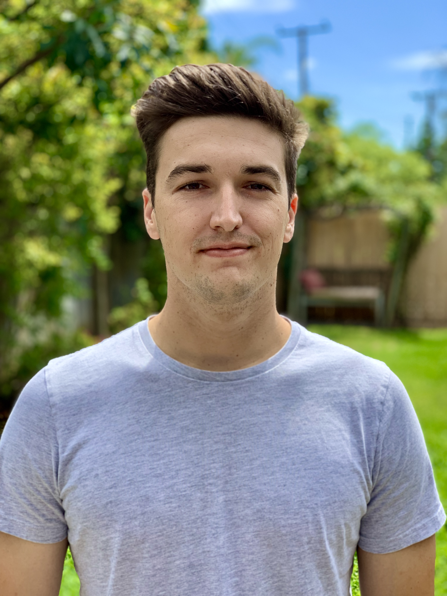
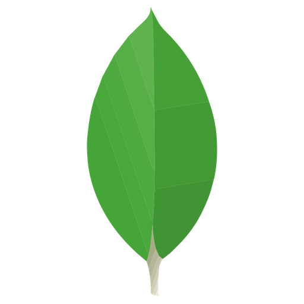
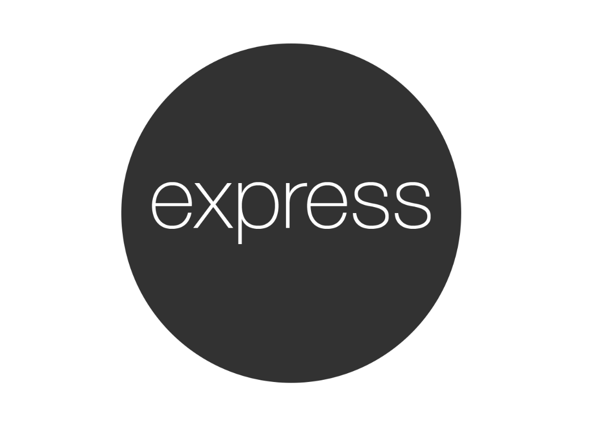
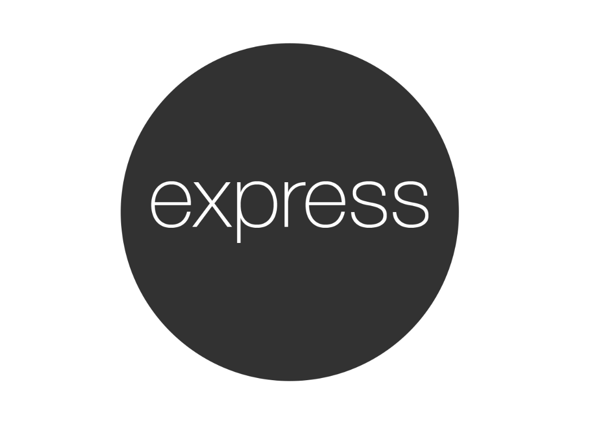

About Me
Hello my name is Nicholas Kidder, I am 25 years old and currently I'm working as a metal fabricator at a sheet metal shop in Fullerton, California but I'm looking to make a career change. I also recieved a certificate from the Coding Bootcamp at UCI in November of 2019 that says I have met the requirements to become a full stack MERN developer. My interest in development started in April 2019, I started working on some of my own research and by the following month I was hooked.I dove in head first and registered for the coding bootcamp and from there my interest and passion only grew. I completed my certificate program on November 2nd 2019, now I am going to continue my education and work towards recieving my Bachelor's Degree in computer science and then proceed to my Masters. Continuing my education is one of the biggest aspects of tech and web development that attracted me to it so much. I truly enjoy learning new skills and I know that development is a field that is constantly growing and changing and it is a career that involves a lifetime of learning. In my free time I enjoy going to the gym, hiking and bike riding, I find that living an active style helps me stay focused and relieves stress especially when it comes to working on tedious tasks such as programming. Other activities I enjoy doing in my free time are spending time with family, friends and my girlfriend. I see my self as a people person and found that I get along with everyone and I always make an effort to be someone who is easy to get along and work with. I still try to meet with my project group from the Coding Bootcamp at least once a week to discuss and teach eachother what what we've been working on and brainstorm ideas for apps to develop together.
 
